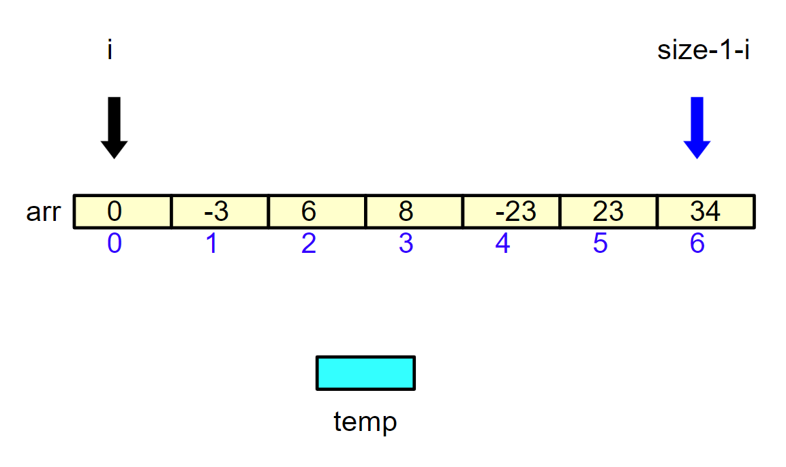

<!DOCTYPE lake>
<h1 data-lake-id="JFDsY" id="JFDsY"><span data-lake-id="u009bf10e" id="u009bf10e">1&gt; 求数组中的最大值</span></h1><span class="yuque-card-unsupported">[codeblock]</span><p data-lake-id="u75a67076" id="u75a67076"><span data-lake-id="u472b594d" id="u472b594d">​</span></p><p data-lake-id="u0a7a2b1a" id="u0a7a2b1a"><span data-lake-id="udfa72d16" id="udfa72d16">解题思路：</span></p><a class="yuque-card-link" href="https://cdn.nlark.com/yuque/0/2026/jpeg/27903758/1783323990412-196c946f-bc08-44ed-8748-d9c000e7b629.jpeg" rel="noopener noreferrer" target="_blank">board：board</a><hr/><h1 data-lake-id="nVxSc" id="nVxSc"><span data-lake-id="u66c967c4" id="u66c967c4">2&gt; 数组逆序存放</span></h1><span class="yuque-card-unsupported">[codeblock]</span><p data-lake-id="u118636e5" id="u118636e5"></p><a class="yuque-card-link" href="https://cdn.nlark.com/yuque/0/2026/jpeg/27903758/1783325223282-47e718fb-832d-4b15-bfcb-21c713df9e25.jpeg" rel="noopener noreferrer" target="_blank">board：board</a><p data-lake-id="u5f3fede4" id="u5f3fede4"><br/></p><p data-lake-id="u603805ba" id="u603805ba"><br/></p><h1 data-lake-id="lKyxk" id="lKyxk"><span data-lake-id="u0955ce95" id="u0955ce95">3&gt; 挑战：数组排序（冒泡排序）</span></h1><p data-lake-id="u9b5ad192" id="u9b5ad192"><span data-lake-id="u095d2eb4" id="u095d2eb4">把以下按照从小到大的顺序排列</span></p><span class="yuque-card-unsupported">[codeblock]</span>